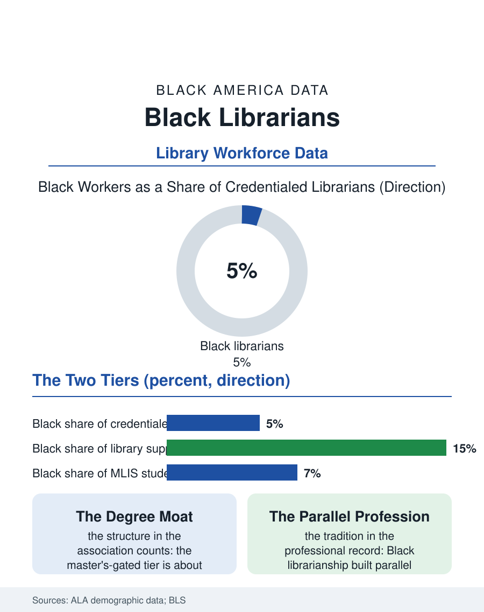

Black Employment
Keepers of the Collection: Black Librarians
The library promises equal access through a master's-gated workforce that is five percent Black, above a diverse support tier doing the same public work. The librarian file.

The public library is the most democratic institution in this atlas, and the librarians who staff it are overwhelmingly credentialed through a single degree, the master's in library science, held by a workforce that the professional association's counts find roughly five percent Black. The library workforce file therefore mirrors the library's own paradox: an institution devoted to equal access, staffed through a pipeline as narrow as any in the professions. This article reads the librarian file, distinct from the school library file in the education pages.
The Master's Degree Moat
The MLIS requirement is the file's central fact. Professional librarian positions, in public, academic, and special libraries, are gated by the accredited master's degree, a credential costing one to two years of graduate tuition, historically earned by a student body whose demographics the accrediting association publishes: Black students in the small single digits of enrollment in most years. The paraprofessional tier beneath the credential, the library associates and technicians who do much of the public-facing work, is substantially more diverse and substantially worse paid, producing the two-tier pattern this atlas has recorded from physical therapy to dentistry, with the credentialed tier whiter and the service tier browner inside the same building, often at the same desk. Academic libraries add the faculty-status layer, tenure lines and research expectations that import higher education's pipeline wholesale. The profession's economics compound the moat: librarian salaries sit below most master's-gated professions, so the debt-to-income arithmetic of the degree deters exactly the candidates without family cushion, a self-reinforcing loop the association's workforce studies have named for decades. The historical chapter matters here: Black librarianship built a parallel professional tradition through the segregated library systems and the HBCU library schools, one of which, at what is now North Carolina Central, trained generations of Black librarians when the flagship programs would not, and the profession's Black caucus remains one of organized librarianship's institutional anchors.
What the Workforce Does in Black Neighborhoods
The distribution of the diverse tier is not random. Black librarians and library workers concentrate in the urban public systems where Black patrons concentrate, which means the institution's front-line cultural competence is disproportionately supplied by its least-credentialed, worst-paid staff, a sentence the workforce data support and the profession's equity statements now repeat. The work itself has expanded into the atlas's other files: the public library is a benefits office, a cooling center, a job center, a digital literacy school, and a warming shelter of last resort, and its workers are the general-purpose helping profession of the American city, a role the credential's curriculum, built for collections and reference, only partially prepares them for. The collection decisions librarians make, whose books, whose histories, whose languages, are the cultural governance of the community's memory, and the Black librarians' professional tradition has always understood collection development as a civil rights practice, from the segregated branches that hoarded Black literature for their readers to the current generation's diversity audits of the catalog itself. The digital transition adds the archives and data specializations where the growth is, and where the pipeline's narrowness costs double, since the digital collections of Black history are being built now, by whoever is in the room.
The Pipeline's Repair Attempts
The profession's responses are documented and specific: scholarship programs funding Black and Latino MLIS students through consortia of library schools, residency programs placing new librarians of color in academic libraries with mentorship and cohort support, and paraprofessional-to-professional bridge funding that attacks the two-tier problem at its seam, letting the experienced associate earn the credential without leaving the workforce or the paycheck. Several HBCU and urban programs market the degree to the library's own workforce explicitly. The demand side offers no obstacle: retirements are thinning the credentialed ranks, public systems report librarian vacancies in the same breath as every other public employer in this atlas, and the job's security and mission attract exactly the service-motivated candidates the community workforce grows. The librarian file closes between the stacks, where the institution's promise and its staffing meet. A library's collection can be audited for diversity in an afternoon; its workforce takes a generation of tuition decisions to change. The Black librarians who hold the institution's memory, its Black collections assembled against indifference, its readers guided to the shelf where they first saw themselves, are the proof of what the changed workforce would be worth. The scholarships and bridges exist. The file asks, with the profession's own data, why they remain pilot-sized in a field whose founding value is access.
More in Black Employment
The Black Unemployment Rate: The Two-to-One Pattern
Black unemployment runs at roughly twice the White rate — 5.5 percent against 3.3 percent in annual averages — a ratio stable across five decades of federal data. How it is measured and why it persists.
Black Median Weekly Earnings: The 80-Cent Ratio
Black full-time workers earn a median of about $900 a week — roughly 80 cents for every dollar White workers earn. The BLS earnings data by group, gender, and occupation.
Black Labor Force Participation: Working at National Rates
Black labor force participation runs at roughly the national rate — and Black women participate at higher rates than White women. The BLS participation data.
Source: American Library Association demographic studies; Institute of Museum and Library Services data; Bureau of Labor Statistics.